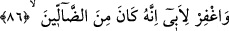

Büyüklerden birisi der ki: “Allah Teâlâ ihsânından dolayı değil, zâtı îtibarıyla
mahbûbdur/sevilendir. O’nun ihsânı, ihsânın kendisinden dolayı değil O sevildiği için
sevilir. Biz O’nu severiz, O’nu sevdiğimizden dolayı ihsanını da severiz. Bizim için iki
sevgi vardır: O’nun sevgisi ve O’nun ihsânının sevgisi. Bu sevginin ikisi de asla
başkası için değil sâdece O’nun zâtı içindir. Biz O’nun zâtının sevgisiyle ve sıfatlarının
sevgisiyle severiz. Fakat biz O’nu ancak bu iki sevgi ile severiz. dediğimiz gibi başkası
için değil sâdece O’nun zâtının sevgisi için severiz, Dolayısıyla sevgi asıl olarak tek,
fer’ olarak cem’ ve vahdet muktezâsınca, fark ve kesret gereğince müteaddiddir. Şu
halde O’nu sevmemiz, ancak cem’u’l-cem’ makâmındadır. Çünkü bu, îtidal makamıdır.
Yoksa O’nu sevmemiz, sadece cem’ veya fark mertebesinde değildir.”
86. Babamı da bağışla (ona tevbe ve iman nasip et). Çünkü o sapıklardandır.
“Babamı da bağışla” Mağfirette îman şart koşulmuştur. Şart koşulanın talebi, şartın
talebini de içine alır. Dolayısıyla hayatta olan müşrikler için istiğfar, onların îmana
muvaffak kılınmalarını ve hidâyete erdirilmelerini taleb etmekten ibârettir.
“Çünkü o sapıklardandır.” Hak yolu kaybedenlerden, yolunu sapıtmış olanlardandır.
İbrâhim (a.s.)’ın babası için yaptığı bu duâ, Tevbe sûresinde geçtiği gibi kendisine
onun kesin olarak Allah’ın düşmanı olduğu belli olmasından önce idi.
Semüre b. Cündeb (r.a.) Rasûlullah (s.a.) şöyle buyurduğunu rivâyet etmiştir: “Bir
kimse abdestini güzel alır, sonra mescide gitme niyeti ile evinden çıkarsa ve çıkarken
“Beni yaratan ve bana doğru yolu gösteren Allah’ın adıyla...” derse, Allah ona
mutlaka işlerin en doğrusunu gösterir. “Beni yediren ve içiren O’dur” derse, Allah
ona mutlaka cennet taamından yedirir ve cennet şarabından içirir. “Hastalandığım
zaman bana şifa veren O’dur.” derse, Allah Teâlâ ona mutlaka şifa verir. “Benim
canımı alacak, sonra beni diriltecek O’dur.” derse, Allah Teâlâ onu mutlaka
şehidlerin hayâtı ile diriltir ve şehidlerin ölümü ile öldürür. “Ve hesap günü
hatalarımı bağışlayacağını umduğum O’dur.” derse, günahları deniz köpükleri
kadar çok bile olsa Allah onları mutlaka mağfiret eder, bağışlar. “Rabbim! Bana
hikmet ver ve beni iyiler arasına kat.” derse, Allah ona mutlaka hikmet verir, onu
geçmiş ve gelecek sâlih kulları arasına katar. “Bana, sonra gelecekler içinde,
iyilikle anılmak nasip eyle.” derse, Allah mutlaka onu katında “sıddîk” olarak yazar.
“Beni, Naîm cennetinin vârislerinden kıl..” derse, Allah mutlaka ona cennette
köşkler ve evler yapar.”[13]
Hasan Basrî, bu duâya şunu da ilâve ederdi: “Küçükken beni büyüttükleri gibi anne-
babamı da bağışla.” Keşfü’l-esrâr’da böyle geçmektedir.